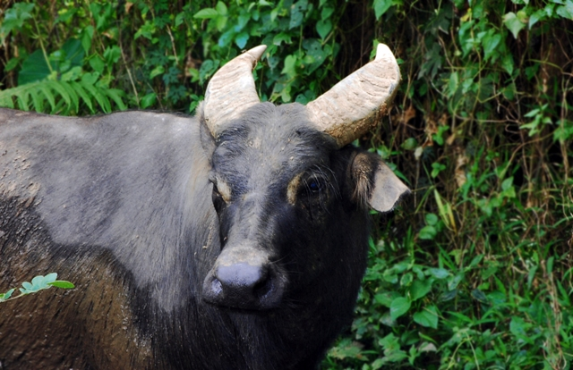
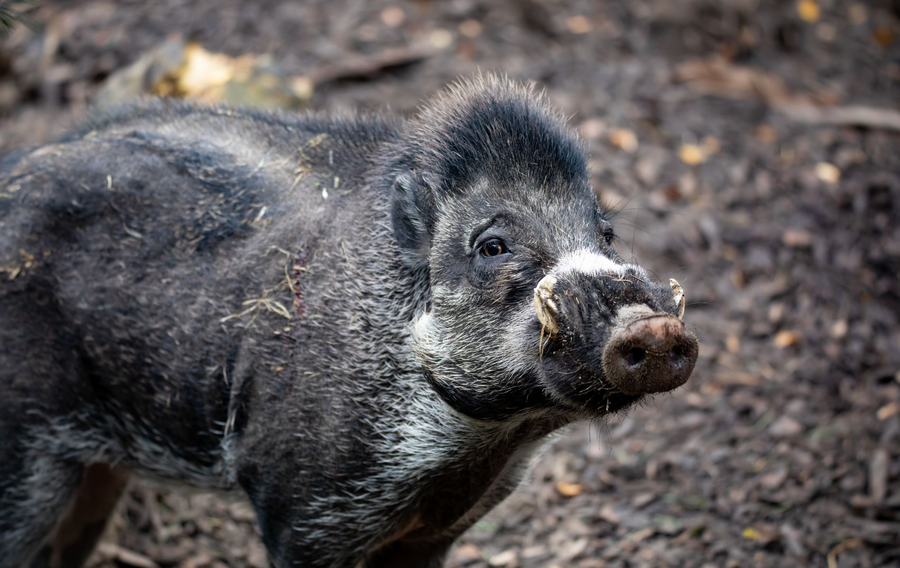
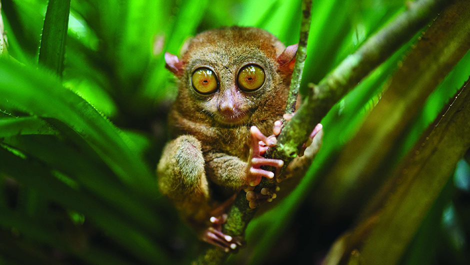
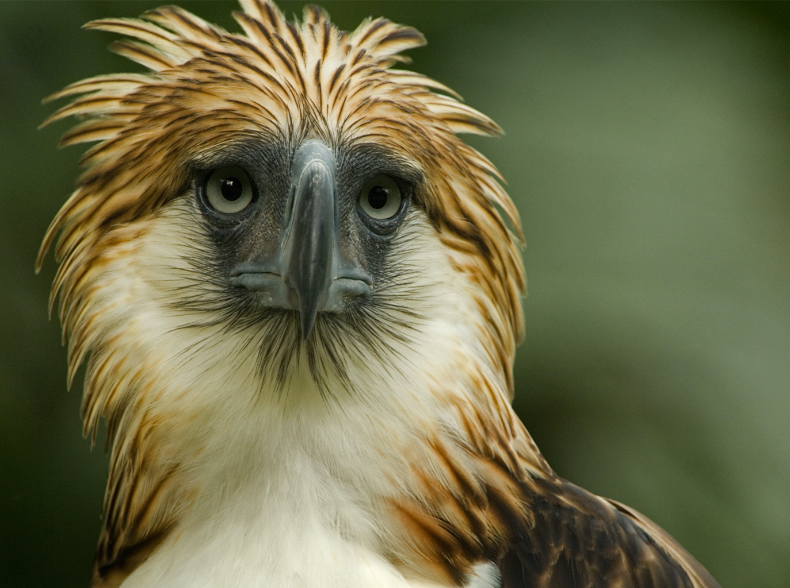
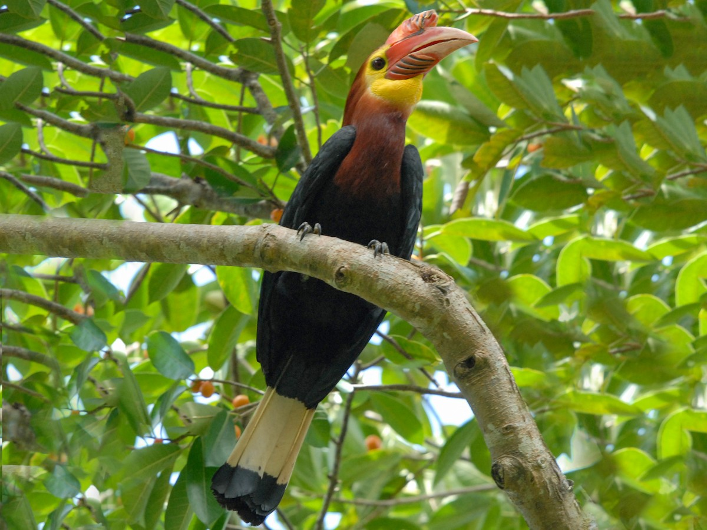
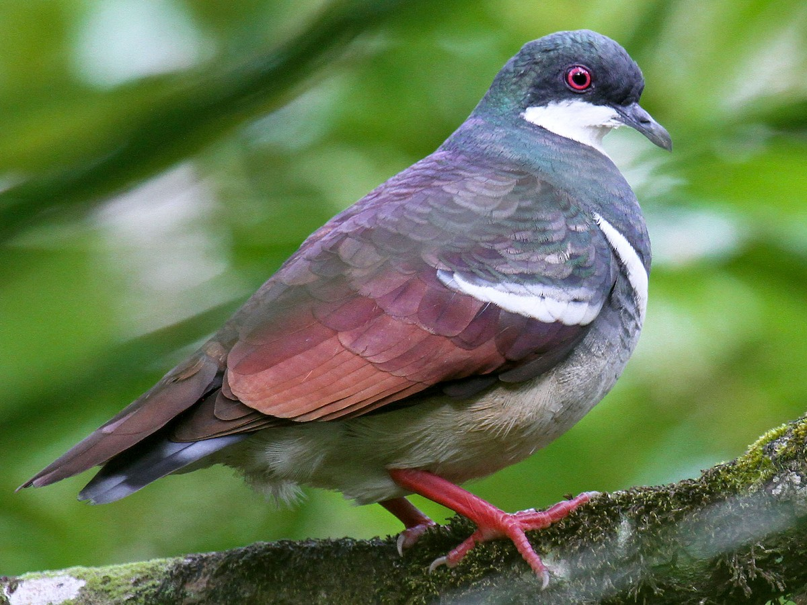
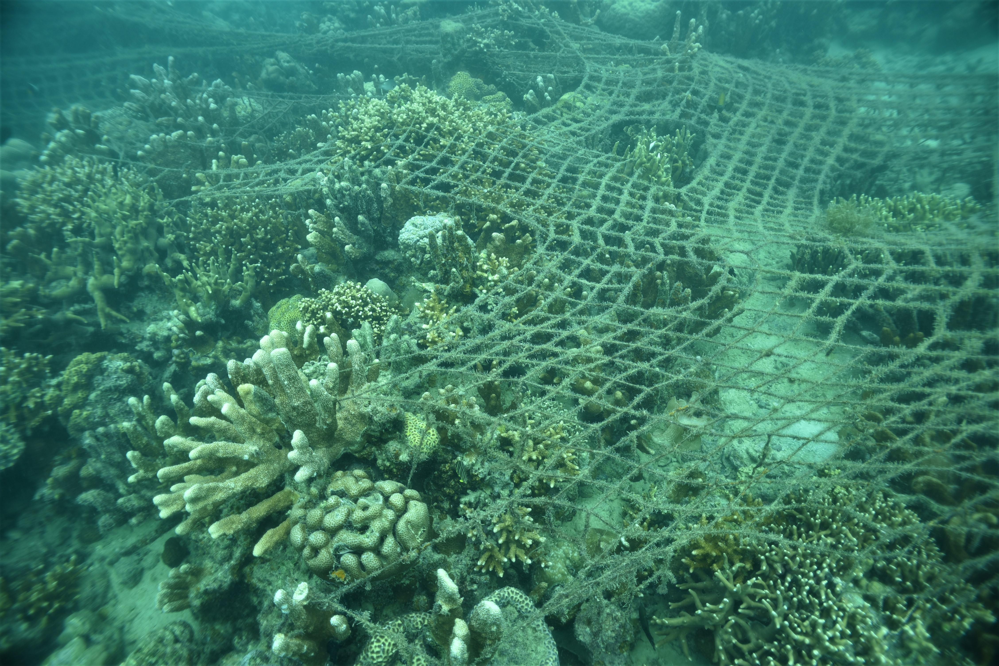
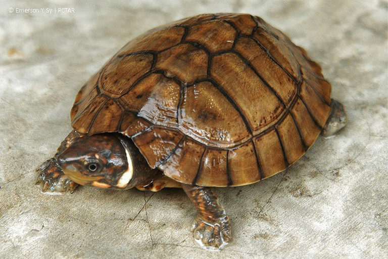

Facts and figures about biodiversity in the Philippines
The Philippines is home to 5% of the world’s flora and ranks fifth worldwide in terms of number of plant species.
The country ranks fourth worldwide in bird endemism. The Philippines is home to over 700 threatened species,
making it one of the world’s most important conservation sites.
The national list of threatened animals was created in 2004 and
comprises 42 land mammal species, 127 bird species, 24 reptile species, and 14 amphibian species.
The Philippines has at least 3,214 fish species, with roughly 121 being indigenous and 76 being threatened.
The Department of Environment and Natural Resources issued an administrative order in 2007 that produced
a nationwide list of threatened plant species, showing that 99 species are critically endangered, 187 endangered,
176 vulnerable, and 64 threatened.
Nine endangered species in the Philippines

Tamaraw
The tamaraw, also known as the dwarf forest buffalo, is an endemic species found exclusively in the Philippines on the island of Mindoro. Initially abundant, their population declined due to habitat loss, diseases like the rinderpest, and illegal hunting. By the 1960s, they were on the brink of extinction, with less than 100 individuals remaining.
Efforts to save the tamaraw included the establishment of a National Park on Mount Iglit-Baco, providing a protected area for them to thrive. Conservation measures have been successful, with the wild population now numbering around 480 individuals.

Visayan Warty Pig
The IUCN lists the Visayan Warty Pig as a critically endangered species in the
Philippines. The pig, which was once common throughout the central Philippines, is now only found
on two islands: Panay and Negros. Although it has not been proved, there may still be a small herd on
Masbate island.
Illegal hunting and logging, as well as agricultural land destruction, contributed to the Visayan Warty Pig’s
extinction on Cebu. To meet the region’s increased need for crops, the animals’ natural habitats were converted
into rice fields. This species is now bred in captivity in small numbers. Although they are extremely rare, some
still exist in the wild, which explains why little is known about the mammal’s natural habits.

Tarsier
These primates are found on the islands of Samar, Leyte, Bohol, and Mindanao, as well as a handful of smaller islands like Dinagat and Basilan.
Tarsiers are a tourism mascot in Bohol, but there is little regulation surrounding this practice.
Many tarsiers are exhibited in deplorable conditions at roadside attractions. Given the difficulty of keeping
tarsiers alive in captivity, mortality is high among these creatures – when they die, replacements are seized
from the wild. Deforestation and increased typhoons due to climate change also pose a threat to wild tarsiers.

Philippine Eagle
The Philippine eagle, also called the monkey-eating eagle,
is the national bird of the Philippines and is endemic to the country.
It's distinguished by its brown-and-white feather pattern and bushy crest,
being one of the largest and most powerful birds globally. However, its survival is
threatened by deforestation, mining, and pollution.
In 1990, it was classified as critically endangered by the IUCN's red list.
Despite protective measures, including laws and the establishment of natural reserves
like Mt. Apo and Mt. Katinglad, enforcement has been lacking, leading to a continuous decline
in their population.The Philippine Eagle Center in Davao, Mindanao, oversees captive breeding efforts to help
conserve this species.

Walden’s Hornbill
Walden’s Hornbill is native to the Philippine islands of Panay and Negros; there
are also small flocks in Zamboanga del Norte, Mindanao. Excessive hunting and illegal logging have
resulted in the extinction of this species in the Negros and Guimaras provinces. As a result, it has been
dded to the IUCN list of critically endangered species.

Negros Bleeding-Heart
This pigeon is only found on the islands of Negros and Panay and is on the IUCN’s
list of critically endangered Philippine pigeon species. They are ground feeders – which means they hunt
on the ground and are easy prey for poachers – and always move in couples or flocks. The Bleeding-Heart population
is declining due to continuing deforestation, excessive hunting, and the illegal exotic pet trade.

Philippine Crocodile
The IUCN has classified the Philippine freshwater crocodile, or Mindoro crocodile,
as critically endangered. The decline of the Philippine freshwater crocodile has been attributed to
illicit hunting and dynamite fishing.The Philippine crocodile’s greatest threat is the enormous clearance
of rainforests that serve as the crocodile’s natural home. The woodlands are being cleared to make way for
farming.
Another threat comes from local people, who hunt the crocodiles illegally. Locals need to be educated
about the differences between the small Philippine freshwater crocodile and the larger saltwater crocodile
that live in the same area. Locals frequently hunt the smaller, endangered native crocodile species without
ecognising the consequences.
The Philippines Animal

Net Coral
The number of net corals is in decline. Due to this population trend, it has been classified
as an endangered species by the IUCN. This variety of coral has been targeted in the aquarium trade, as its
ppearance makes it a desirable addition to a tank. In addition to being extracted and used in aquariums, net
corals are also vulnerable to coral bleaching. Net corals are strongly reactive to the bleaching phenomenon,
making them a species that is likely to go extinct soon.

Philippine Forest Turtle
The Philippines is home to five of seven sea turtle species in the world. All five of these species
are threatened and listed as endangered.
The Philippine forest turtle, sought by collectors for its uniqueness, continues to face a major t
hreat from the illicit pet trade. In 2015, a single bust in Palawan uncovered nearly 4,000 turtles.